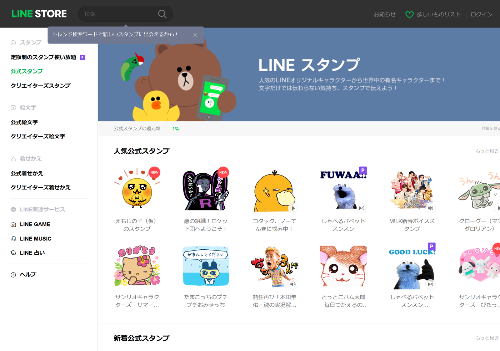

第9章 販売と宣伝
この章でわかること
- 販売URLの確認方法
- 媒体別（Threads / X / Instagram / Facebook / LINE / ブログ / note）の使い分け
- URLだけを投稿してはいけない理由
- 見せるべき8つの素材（制作過程・ボツ案・失敗談など）
- そのまま使える投稿文：Threads 3案 / X 3案 / Instagram 3案 / LINE 3案
なぜ宣伝が必要なのか
結論。
作っただけでは、誰もスタンプの存在を知りません。
LINEのスタンプショップには、膨大な数の作品があります。
その中で、新しく出した1作品が自然に見つかる可能性は高くありません。
だから、自分から知らせます。
宣伝は「営業」ではありません
「買ってください」と言い続けるのは、宣伝ではありません。
そして、うまくいきません。
うまくいくのは、こちらです。
作っている様子を見せること。
人は、完成品よりも過程に興味を持ちます。
「AIでスタンプを作ってみた」という話は、それ自体がコンテンツになります。
ステップ1 販売URLを確認する
販売が開始されると、スタンプのページURLが発行されます。
確認方法
方法1 管理画面から
- LINE Creators Marketの管理画面を開く
- 「アイテム管理」から対象のスタンプを開く
- 販売中のステータスになっていることを確認する
- LINE STOREへのリンクを確認する
方法2 LINE STOREで検索
- ブラウザでLINE STOREを開く
- 自分のスタンプのタイトルで検索する
- 自分の作品ページを開く
- ブラウザのアドレスバーのURLをコピーする
方法3 スマートフォンから
- LINEアプリのスタンプショップを開く
- 自分の作品を検索する
- 作品ページの共有ボタンからURLを取得する
URLを取得したら
すぐにメモしてください。
そして、後で使うので、以下の形で保存します。
【作品情報メモ】
タイトル：
販売URL：
クリエイターページURL：
販売開始日：
枚数：
価格帯：

URLだけを投稿してはいけない理由
これは、いちばん多い失敗です。
なぜダメなのか
【悪い投稿例】
LINEスタンプ作りました！
https://store.line.me/...
この投稿には、次の問題があります。
- 何のスタンプかわからない
- リンクを開く理由がない
- 面白くない
- フォロワーが増えない
見る人の立場になってください。
知らない人の「スタンプ作りました」を、わざわざタップしますか。
しません。
では何を見せるのか
8つの素材があります。
これを順番に投稿していくと、1作品で2週間ぶんの投稿ができます。
見せるべき8つの素材
素材1 制作過程
作業している様子です。
- キャラクター設定を書いているところ
- 生成プロンプトを試しているところ
- 40枚を並べているところ
- 加工しているところ
画面のスクリーンショットが、そのまま素材になります。
これは、AIを使った制作の強みです。
素材2 ボツ案
これがいちばん反応が良い素材です。
採用しなかった案を見せます。
- キャラクターの初期案
- 生成に失敗した画像
- 顔が変わってしまった画像
- 使わなかったセリフ
「なぜボツにしたか」を書くと、話が広がります。
私が過去に投稿したときも、完成品よりボツ案のほうが反応がありました。
理由は、完成品には情報がないからです。
ボツ案には「判断」が含まれています。
素材3 キャラクター設定
第3章で作った設定シートを見せます。
- 名前と性格
- 服装と色の設定
- 口ぐせ
- 表情バリエーション
設定を見せると、キャラクターに愛着が生まれます。
素材4 審査通過報告
「審査に通りました」という報告です。
これは、次の理由で有効です。
- 進捗として報告できる
- リジェクトの経験も一緒に語れる
- 同じことをやりたい人の参考になる
素材5 実際の使用例
トーク画面でスタンプを使っているスクリーンショットです。
自分だけのグループで撮影してください。
他人のトーク内容が写らないようにします。
「どの場面で使うか」が伝わるので、いちばん実用的な素材です。
素材6 制作者の失敗談
共感を生む素材です。
- 40枚作ってから顔が違うと気づいた
- 透過したつもりで白い四角が残っていた
- タブ画像を正方形で作っていた
- リジェクトを受けた
失敗談は、成功談より読まれます。
そして、「この人は本当にやっている」と伝わります。
素材7 シリーズの予告
「次は敬語版を作ります」という予告です。
これで、次の投稿につながります。
そして、待ってくれる人が生まれます。
素材8 フォロワーへの投票
参加してもらう素材です。
- 「A案とB案、どっちがいいですか」
- 「次はどのテーマがいいですか」
- 「このセリフ、使いますか」
投票は、反応のハードルがいちばん低い形式です。
そして、答えてくれた人は、完成品に興味を持ちます。
媒体別の使い分け
7つの媒体を、役割で分けます。
Threads（スレッズ）
- 得意：文章での実況、制作過程の連投
- 長さ：短文〜中くらい
- おすすめの使い方：制作日記として毎日投稿
会話のような雰囲気なので、途中経過を出しやすいです。
「今日はセリフ40個を書きました」だけでも投稿になります。
X（エックス）
- 得意：拡散、短い言い切り
- 長さ：短文
- おすすめの使い方：画像1枚＋短い文で1投稿
情報が流れるのが速いので、同じ話題を形を変えて何度も出せます。
- 得意：画像を見せる、まとめて見せる
- 長さ：画像中心＋説明文
- おすすめの使い方：複数画像投稿で「制作過程」をまとめる
40枚を並べた画像、ビフォーアフター、設定シートの画像が向いています。
ストーリーズでは、投票機能が使えます。
- 得意：知人への告知、長めの文章
- 長さ：中〜長文
- おすすめの使い方：販売開始のまとまった報告
つながりが実際の知人中心なので、丁寧な報告文が合います。
LINE
- 得意：友だち・グループへの直接の案内
- 長さ：短文
- おすすめの使い方：実際に使ってみせる
ここが最も直接的です。
ただし、送り方には配慮が必要です（後述）。
ブログ
- 得意：検索から見つけてもらう
- 長さ：長文
- おすすめの使い方：制作手順の記録
「AIでLINEスタンプを作る方法」のような記事は、後から読まれ続けます。
note
- 得意：制作の考え方、まとまった読み物
- 長さ：長文
- おすすめの使い方：企画からの全記録
過程を丁寧に書くと、スタンプ本体より読まれることがあります。
そして、それが結果としてスタンプの紹介になります。
投稿の順番（2週間の流れ）
素材を順番に出すと、こうなります。
| 日 | 内容 | 媒体 |
|---|---|---|
| 制作中 Day1 | テーマを決めた話 | Threads |
| 制作中 Day2 | キャラクター初期案（3案）＋投票 | X / Instagram ストーリーズ |
| 制作中 Day3 | 設定シートを見せる | Threads |
| 制作中 Day4 | 生成に失敗した画像（ボツ案） | X |
| 制作中 Day5 | 4枚だけ完成した報告 | Threads |
| 制作中 Day6 | 40枚並べた画像 | |
| 申請日 | 申請しました報告 | Threads / X |
| リジェクト時 | リジェクト内容と修正の話 | Threads / X |
| 承認日 | 審査通過報告 | 全媒体 |
| 販売開始日 | 販売開始＋URL | 全媒体 |
| +1日 | 実際の使用例（トーク画面） | X / Instagram |
| +3日 | 制作の失敗談まとめ | Threads / note |
| +5日 | 使い方の提案（どの場面で使うか） | |
| +7日 | 次作の予告＋テーマ投票 | 全媒体 |
URLを出すのは、販売開始日以降です。
それまでは、過程だけを出します。
これで、販売開始日に「あ、あの人のスタンプ出たんだ」となります。
そのまま使える投稿文
第3章・第4章の「アイナ」を前提にしています。
（URL） の部分に、自分の販売URLを入れてください。
Threads向け 3案
Threadsは、会話のような雰囲気が合います。
Threads案1 制作過程（販売前）
LINEスタンプを作っています。
キャラクターは「AIコンサルのアイナ」。
口ぐせは「それAIでいけるっしょ」です。
今日やったこと：
・セリフ40個を書き出した
・カテゴリー別に配分した（返事5個、確認4個…）
意外だったのは、「うれしい」より「了解」のほうが
圧倒的に使われるということ。
感情のスタンプを増やしても、実は使われないんですよね。
明日から画像を作ります。
Threads案2 失敗談（販売前）
LINEスタンプ制作、今日の失敗。
キャラクターの服を白いTシャツにしたんですが、
背景も白で生成していました。
背景を透明に抜こうとしたら、Tシャツも消えました。
対策：背景を薄いグレーで生成する。
これで境界が残るので、切り抜けます。
同じことをやりそうな人のために書いておきます。
Threads案3 販売開始
LINEスタンプが販売開始になりました。
「AIコンサル アイナ」40個です。
（URL）
作ってみてわかったこと：
・絵が描けなくても作れる
・でもAIに丸投げでは完成しない
・いちばん時間がかかるのは加工
とくに透過の確認は、黒い背景に重ねないと
できているかわかりません。
ここで1回リジェクトを受けました。
次は敬語版を作ります。
X向け 3案
Xは短く言い切ります。
画像を1枚添えるのが前提です。
X案1 ボツ案（販売前）
LINEスタンプのキャラクター初期案。
左が採用、右がボツ。
ボツにした理由は「頭身が高すぎる」。
スタンプは小さく表示されるので、
顔が大きい方が表情が読めます。
3頭身に変更しました。
#LINEスタンプ #生成AI
X案2 制作過程（販売前）
LINEスタンプ用に40枚生成しました。
コツは、キャラクター設定を毎回まるごと貼ること。
要約すると別人が出てきます。
面倒だけど、コピペなら3秒。
40枚ぶんの作り直しより速い。
#LINEスタンプ #AI画像生成
X案3 販売開始
LINEスタンプ「AIコンサル アイナ」販売開始しました。
「それAIでいけるっしょ」が口ぐせの
陽気なコンサルタント、40個です。
（URL）
企画→キャラ設計→セリフ40個→生成→加工→申請。
全工程の記録はnoteに書きます。
#LINEスタンプ
Instagram向け 3案
Instagramは画像が主役です。
複数画像投稿（カルーセル）を前提にします。
Instagram案1 制作過程まとめ（10枚投稿）
画像構成
1枚目：完成したメイン画像
2枚目：キャラクター設定シート
3枚目：初期案3パターン
4枚目：生成に失敗した画像
5枚目：加工前（背景あり）
6枚目：加工後（透過・文字入り）
7枚目：40枚を並べた画像
8枚目：トーク画面での使用例
9枚目：制作の流れ（図）
10枚目：次作の予告
キャプション
絵が描けない人がLINEスタンプを作るまで。
キャラクターは「AIコンサルのアイナ」。
AIを使って仕事を効率化する、陽気なコンサルタントです。
────────
制作の流れ
────────
1. テーマを決める
2. キャラクター設定を書く
3. セリフを40個作る
4. 画像を生成する（まず4枚だけ）
5. スマホで見え方を確認する
6. 残りを作る
7. 加工する（透過・文字入れ）
8. 申請する
いちばん時間がかかったのは、7の加工でした。
生成は思ったより早く終わります。
いちばん大事だったのは、4の「まず4枚だけ」。
40枚作ってから顔が違うと気づくと、全部やり直しです。
スワイプして見てください →
#LINEスタンプ #生成AI #AI活用 #スタンプ制作
#イラスト初心者 #副業 #ものづくり
Instagram案2 ビフォーアフター（2枚投稿）
画像構成
1枚目：生成したままの画像（背景あり・文字なし）
2枚目：完成品（透過・文字入り・白フチ付き）
キャプション
LINEスタンプ、加工前と加工後。
やったことは4つだけです。
1. 背景を透明にする
2. 全体を少し縮小して余白を作る
3. セリフを入れる（太いゴシック体）
4. 文字とキャラクターに白いフチを付ける
4の白フチが、地味だけどいちばん効きます。
LINEのトーク背景は人によって違います。
暗い背景の人には、白フチがないと文字が読めません。
自分のスマホで確認して満足しないこと。
背景を黒に変えて、もう一度見てください。
#LINEスタンプ #画像加工 #生成AI #制作過程
Instagram案3 販売開始（3枚投稿）
画像構成
1枚目：メイン画像
2枚目：40枚を並べた画像
3枚目：トーク画面での使用例
キャプション
LINEスタンプ「AIコンサル アイナ」販売開始しました。
「それAIでいけるっしょ！」が口ぐせの
AI活用コンサルタント、アイナの40個セットです。
────────
入っているもの
────────
あいさつ 4 / 返事 5 / 感謝 3 / 謝罪 3
確認 4 / 仕事 5 / 感情 5 / 応援 4
締め 4 / アイナのネタ 3
仕事のグループトークでも、友だちとの雑談でも
使えるようにセリフを選びました。
とくに「了解っしょ！」「まかせて！」は
自分がいちばん使っています。
プロフィールのリンクから見られます。
次は敬語版を作ります。
どんなセリフが欲しいか、コメントで教えてください。
#LINEスタンプ #新作スタンプ #生成AI #AI活用
注意
Instagramは投稿本文からリンクを開けないことがあります。
プロフィール欄にリンクを置いて、「プロフィールのリンクから」と案内してください。
LINE向け 3案
ここは配慮が必要です。
LINEは、相手に直接届きます。
一斉送信は、関係を悪くすることがあります。
LINE投稿の原則
- 一斉送信で全員に送らない
- グループに無断で貼らない
- まず自分が使う。聞かれたら答える
いちばん自然なのは、これです。
自分のスタンプを普通に使う。「それ何？」と聞かれたら教える。
LINE案1 個別に伝える（親しい相手）
LINEスタンプ作ってみました。
「AIコンサル アイナ」っていうキャラクターです。
（URL）
「了解っしょ！」とか「まかせて！」とか、
返事系を多めに入れました。
もし使いそうだったら見てみてください。
使わなくても全然大丈夫です。
ポイント
「使わなくても大丈夫」と書きます。
これで、相手に負担をかけません。
LINE案2 プロフィールに載せる
LINEのプロフィール欄（ステータスメッセージ）に置きます。
LINEスタンプ作ってます / AIコンサル アイナ
そして、プロフィールの背景画像をメイン画像にします。
これは押し付けになりません。
見た人だけが気づきます。
LINE案3 グループで聞かれたときの返し
自分のスタンプを普通に使っていると、聞かれることがあります。
それ、自分で作ったスタンプなんです。
AIでキャラクターの絵を作って、
セリフは自分で40個考えました。
よかったら（URL）
作り方の記録もnoteに書いてるので、
興味あったら見てください。
この形がいちばん自然です。
聞かれてから答えるので、宣伝になりません。
会話です。
ブログ・note向けの書き方
長文が書ける媒体では、手順を書きます。
書く内容
1. なぜこのテーマにしたか
2. キャラクター設定（設定シートをそのまま公開）
3. セリフ40個の選び方
4. 使ったツールと設定
5. 生成プロンプト（実際に使ったもの)
6. 加工の手順
7. 失敗したこと
8. リジェクトされたことと、その対応
9. 申請の流れ
10. これから作る人へのアドバイス
なぜ手順を公開するのか
「真似されるのでは」と思うかもしれません。
でも、実際はこうなります。
- 読んだ人の多くは作らない
- 作った人はキャラクターが違うので競合しない
- 記事が読まれることで、スタンプも見られる
そして、記事自体が検索から読まれ続けます。
制作記録は、スタンプより長く働く資産になります。
そのまま使えるプロンプト
プロンプト1 媒体別の投稿文を作る
あなたはSNS運用に詳しいライターです。
以下の情報から、LINEスタンプの宣伝投稿を作ってください。
【スタンプの情報】
- タイトル：
- キャラクター設定：
- セリフの特徴：
- 枚数：
- 販売URL：
- 制作で苦労した点：
- 失敗した点：
- ボツにした案：
- 次作の予定：
【作ってほしい投稿】
1. Threads向け 3案（制作過程 / 失敗談 / 販売開始）
2. X向け 3案（各140文字程度、画像1枚添付前提）
3. Instagram向け 3案（画像構成の指示＋キャプション）
4. LINE向け 3案（個別送信 / プロフィール / 聞かれたときの返し）
【条件】
- 販売URLだけを貼る投稿は作らない
- 制作過程・ボツ案・失敗談のいずれかを必ず含める
- 「絶対」「必ず」「日本一」などの誇張表現を使わない
- 押し売りにならない書き方にする
- LINE向けは、相手に負担をかけない表現にする
- ハッシュタグは媒体に合わせて適量にする
- 1文を短くして、2〜4文ごとに改行する
プロンプト2 制作過程を投稿ネタに分解する
私はLINEスタンプを1作品作りました。
この制作過程を、SNS投稿14日ぶんのネタに分解してください。
【制作の記録】
（自分がやったことを箇条書きで貼る）
【出力してほしいこと】
- 14日ぶんの投稿計画（日 / 内容 / 媒体 / 添付する画像）
- 各投稿の狙い（1行）
- 販売URLを出すタイミング
【条件】
- 販売開始日より前には販売URLを出さない
- ボツ案・失敗談・投票を必ず含める
- 同じ内容の繰り返しにしない
- 撮影・準備が必要な画像を明記する
プロンプト3 note記事の構成を作る
LINEスタンプの制作記録をnoteに書きます。
以下の情報から、記事の構成案を作ってください。
【制作の記録】
（貼る）
【条件】
- 読者は「絵が描けないけどスタンプを作りたい人」
- 見出しを多く使う
- 結論を先に書く構成にする
- 失敗談を必ず入れる
- 実際に使ったプロンプトを載せる場所を作る
- 「必ず稼げる」のような誇張表現を使わない
- 読んだ人が実際に手を動かせる構成にする
【出力】
見出し構成（h2・h3）＋各見出しで書く内容の要点
よくある失敗
失敗1 販売URLだけを投稿する
誰もタップしません。
対策：制作過程・ボツ案・失敗談を見せる。
失敗2 販売開始まで何も投稿しない
当日にいきなり出しても、誰も知りません。
対策：制作中から投稿する。過程が素材になる。
失敗3 「買ってください」を繰り返す
離れられます。
対策：作っている様子を見せる。判断は相手に任せる。
失敗4 LINEで一斉送信する
関係が悪くなることがあります。
対策：自分が普通に使う。聞かれたら答える。
失敗5 完成品だけを見せる
情報がないので、反応がありません。
対策：ボツ案と失敗談を見せる。こちらのほうが読まれる。
失敗6 他人のトーク画面を写す
プライバシーの問題になります。
対策：自分だけのグループで撮影する。
失敗7 1回投稿して終わりにする
1回では届きません。
対策：14日の投稿計画を立てる。
失敗8 次作の予告をしない
投稿が続きません。
対策：予告する。投票で意見を聞く。
失敗9 Instagramの本文にURLを書く
タップできないことがあります。
対策：プロフィールにリンクを置いて案内する。
失敗10 実績を盛る
事実でない数字を書くと、信頼を失います。
対策：実際にあったことだけを書く。
この章のチェックリスト
販売開始時
- 販売URLを確認した
- 作品情報をメモに保存した
- メイン画像を投稿用に用意した
- 40枚を並べた画像を用意した
- トーク画面での使用例を撮影した（自分専用グループで）
素材の準備
- 制作過程のスクリーンショットを保存している
- ボツ案を保存している
- キャラクター設定シートを公開できる形にした
- 失敗談を書き出した
- 次作の予告を用意した
投稿
- 14日ぶんの投稿計画を作った
- Threads用の投稿文を3本用意した
- X用の投稿文を3本用意した
- Instagram用の投稿（画像構成＋キャプション）を3本用意した
- LINEでの伝え方を決めた（一斉送信しない）
- Instagramのプロフィールにリンクを設置した
- 誇張表現・事実でない実績が入っていないか確認した
- 他人のトーク内容が写っていないか確認した
章のまとめ
- 作っただけでは知られない。自分から知らせる
- URLだけの投稿は読まれない。過程を見せる
- 素材は8つ。ボツ案と失敗談がいちばん読まれる
- 媒体は役割で使い分ける（Threads=日記、X=拡散、Instagram=画像、note=記録）
- 販売URLは販売開始日から。それまでは過程だけ
- LINEは一斉送信しない。自分が使って、聞かれたら答える
- 制作記録の記事は、スタンプより長く働く
次の章では、シリーズ展開に進みます。
1作目が完成したいま、2作目は3分の1の時間で作れます。